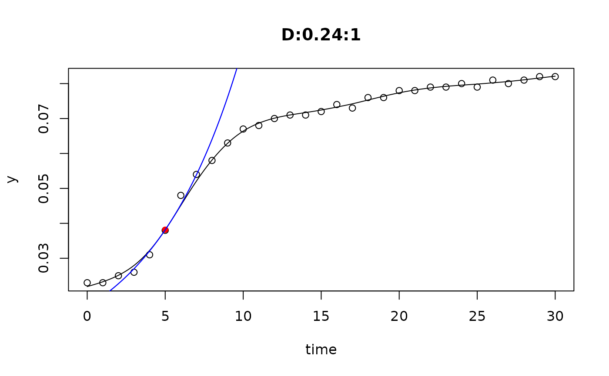
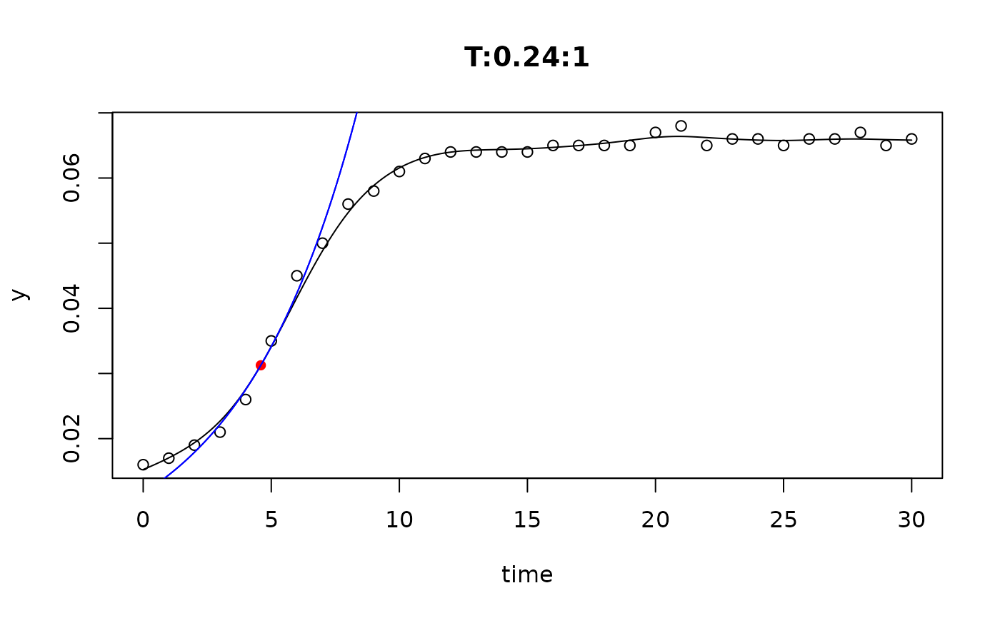
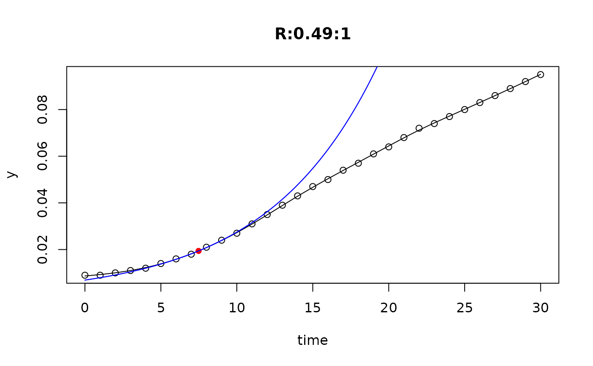
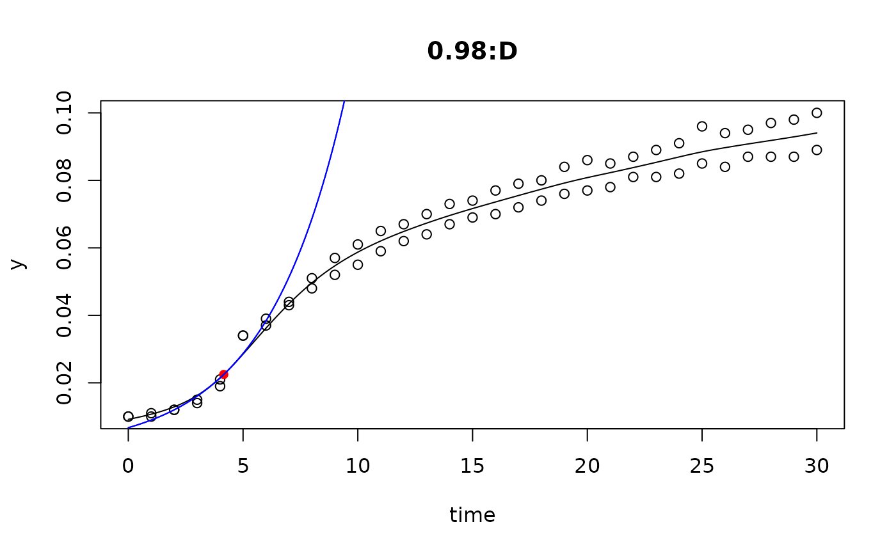
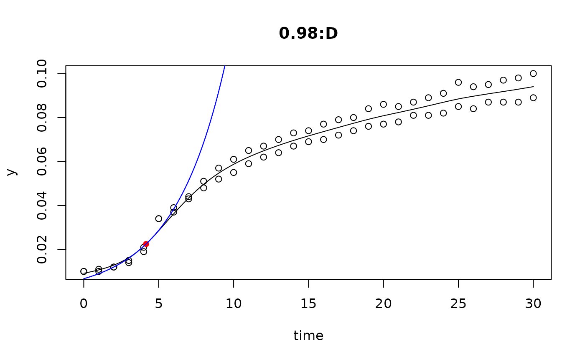
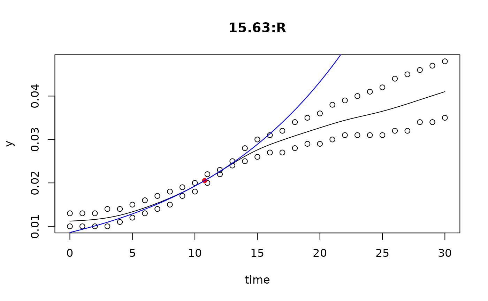
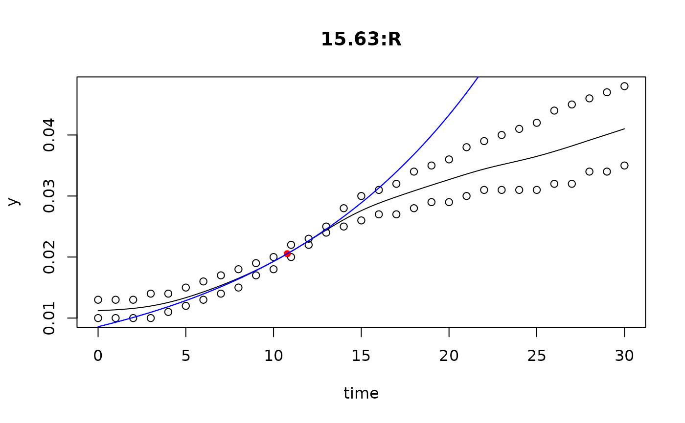

Determine maximum growth rates from log-linear part of the growth curve for a series of experiments by using smoothing splines.
Usage
all_splines(...)
# S3 method for class 'formula'
all_splines(formula, data = NULL, optgrid = 50, subset = NULL, ...)
# S3 method for class 'data.frame'
all_splines(
data,
grouping = NULL,
time = "time",
y = "value",
optgrid = 50,
...
)Arguments
- ...
generic parameters, including parameters passed to
smooth.spline, see details.- formula
model formula specifying dependent, independent and grouping variables in the form:
dependent ~ independent | group1 + group2 + ....- data
data frame of observational data.
- optgrid
number of steps on the x-axis used for searching the maximum of the first derivative of the spline. The default should work in most cases, as long as the data are equally spaced. A smaller number may lead to non-detectable speed-up, but has the risk that the search is trapped in a local minimum.
- subset
a specification of the rows to be used: defaults to all rows.
- grouping
vector of grouping variables defining subsets in the data frame.
- time
character vectors with name independent variable.
- y
character vector with name of dependent variable.
Details
The method was inspired by an algorithm of Kahm et al. (2010), with different settings and assumptions. In the moment, spline fitting is always done with log-transformed data, assuming exponential growth at the time point of the maximum of its first derivative.
All the hard work is done by function smooth.spline from package
stats, that is highly user configurable. Normally, smoothness is
automatically determined via cross-validation. This works well in many cases,
whereas manual adjustment is required otherwise, e.g. by setting spar
to a fixed value \([0,1]\) that also disables cross-validation.
A typical case where cross validation does not work is, if time dependent
measurements are taken as pseudoreplicates from the same experimental unit.
References
Kahm, M., Hasenbrink, G., Lichtenberg-Frate, H., Ludwig, J., Kschischo, M. 2010. grofit: Fitting Biological Growth Curves with R. Journal of Statistical Software, 33(7), 1-21, doi:10.18637/jss.v033.i07
See also
Other fitting functions:
all_easylinear(),
all_growthmodels(),
fit_easylinear(),
fit_growthmodel(),
fit_spline()
Examples
data(bactgrowth)
L <- all_splines(value ~ time | strain + conc + replicate,
data = bactgrowth, spar = 0.5)
#par(mfrow=c(4, 3))
plot(L)




 results <- results(L)
xyplot(mumax ~ log(conc + 1)|strain, data=results)
## fit splines at lower grouping levels
L2 <- all_splines(value ~ time | conc + strain,
data = bactgrowth, spar = 0.5)
plot(L2)

results <- results(L)
xyplot(mumax ~ log(conc + 1)|strain, data=results)
## fit splines at lower grouping levels
L2 <- all_splines(value ~ time | conc + strain,
data = bactgrowth, spar = 0.5)
plot(L2)

 
## total data set without any grouping
L3 <- all_splines(value ~ time,
data = bactgrowth, spar = 0.5)
#par(mfrow=c(1, 1))
plot(L3)

## total data set without any grouping
L3 <- all_splines(value ~ time,
data = bactgrowth, spar = 0.5)
#par(mfrow=c(1, 1))
plot(L3)